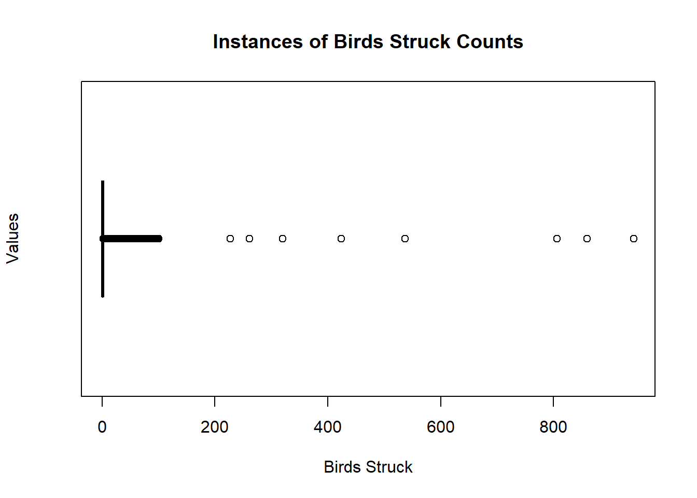

Is there evidence that warnings of birds in the flight path have an effect on the number of birds hit? Does it even matter if pilots are warned?
Exploratory Data Analysis
In order to understand the relationship between the two columns, we need to explore the shape of the data and prepare it for modeling. When looking at the summary, we can see that on average, 2.7 birds were hit. Based on the summary statistics and visuals below, collisions typically do not hit an extreme number of birds, primarily keeping the count under 100. Outliers may skew our data a little bit, as the maximum amount of birds hit was 942. When looking at the dataset, there were 14,567 collisions where pilots were not warned, and 10,862 collisions when pilots were warned. In total, 36,789 birds were hit by pilots who were not warned, and warned pilots hit 31,860 birds. There is not a clear trend of collision counts changing throughout specific years.
# Formatting the date column as a date instead of string. For EDA purposesdata$Date <-as.Date(data$FlightDate, format ="%m/%d/%y %H:%M")# Mean, Median, Quartiles, Maximum, Minimumsummary(data$NumberStruckActual)# Count of Instances - how many incidences were the pilots warned vs not warned about the birds in the sky?table(data$PilotWarned)data$WasWarned <-0data$WasWarned[data$PilotWarned =="Y"] <-1
Min. 1st Qu. Median Mean 3rd Qu. Max.
1.0 1.0 1.0 2.7 1.0 942.0
N Y
14567 10862

Regression Modeling
Now that we have a deeper understanding of the data, we can model the relationship to understand if there are any effects of warnings on the number of birds struck. We used both Bayesian and Frequentist modeling methods to obtain thorough and consistent results. While they both serve the same purposes, in their foundations they approach hypothesis testing with different expectations. Bayesian models incorporate prior information to give a probabilistic framework that updates beliefs about parameters as we gain new information. Frequentist models rely on observed data via random sampling. Combining these two approaches gives us a more cohesive idea of the relationship between the two variables.
Bayesian Process
When we begin Bayesian Hypothesis Testing, we must start by using prior distributions that make sense. Bayesian models can experience two kinds of sources of predictive distribution variability. One of which is distributional variability. This kind of variability questions the certainty of our parameters. In order to test our parameters, we included predictive checks of the prior distribution to ensure our samples from the prior match the reality. We wanted to use a somewhat informed prior, containing a normal distribution for the coefficient and the log-normal for the intercept, to prevent negative predictions, as it is impossible to hit a negative number of birds. Based on the prior predictive check, the prior was not as informative as hoped. There are a few samples that fall into the negative range. Mostly, the samples feature values consistent with the prior data.
The posterior predictive check gives us more hope for the model, as the values sampled from the posterior distribution seem much more in line with the true values of the posterior. The same prior is used. No negative values are sampled, which makes sense in our scenario. The trace plots below the predictive checks also indicate convergence across sampling chains, a desirable trait for modeling reliability.
# Lower bound idea: https://discourse.mc-stan.org/t/checking-understanding-of-bounds-on-priors/8940 since we at least need a collision value of 1. Stop predicting negatives!# Log normal idea to introduce non-negativity, took out variance# Prior distributionspriors <-c(prior("normal(0, 2)", class ="b", lb =0),prior("lognormal(log(2.7), 0.5)", class ="Intercept"))mod_1 <-brm(NumberStruckActual ~ WasWarned, data = data, prior = priors, sample_prior ="only")
Using 10 posterior draws for ppc type 'dens_overlay' by default.
prior class coef group resp dpar nlpar lb ub
normal(0, 2) b 0
normal(0, 2) b WasWarned 0
lognormal(log(2.7), 0.5) Intercept
student_t(3, 0, 2.5) sigma 0
source
user
(vectorized)
user
default
# Posterior Distribution Check # poisson likelihood function for non-negativity count (count of birds hit)mod_1 <-brm(NumberStruckActual ~ WasWarned, data = data, prior = priors, family =poisson())
mod_1 |>pp_check() +xlim(-50, 50)
Using 10 posterior draws for ppc type 'dens_overlay' by default.
# Summary of Valuessummary(mod_1)
Family: poisson
Links: mu = log
Formula: NumberStruckActual ~ WasWarned
Data: data (Number of observations: 25429)
Draws: 4 chains, each with iter = 2000; warmup = 1000; thin = 1;
total post-warmup draws = 4000
Regression Coefficients:
Estimate Est.Error l-95% CI u-95% CI Rhat Bulk_ESS Tail_ESS
Intercept 0.93 0.01 0.92 0.94 1.00 2539 2386
WasWarned 0.15 0.01 0.13 0.16 1.00 2034 1930
Draws were sampled using sampling(NUTS). For each parameter, Bulk_ESS
and Tail_ESS are effective sample size measures, and Rhat is the potential
scale reduction factor on split chains (at convergence, Rhat = 1).
# Measure convergence & metricsmcmc_trace(mod_1)
mod_1$fit# Posterior Examination - parameter estimation for the coefficient# plot a parameter for coefficient to see densitiy of posteriors for each valuesmcmc_areas(mod_1, pars =c("b_WasWarned"))
Inference for Stan model: anon_model.
4 chains, each with iter=2000; warmup=1000; thin=1;
post-warmup draws per chain=1000, total post-warmup draws=4000.
mean se_mean sd 2.5% 25% 50% 75%
b_Intercept 0.93 0.00 0.01 0.92 0.92 0.93 0.93
b_WasWarned 0.15 0.00 0.01 0.13 0.14 0.15 0.15
Intercept 0.99 0.00 0.00 0.98 0.99 0.99 0.99
lprior -3.15 0.00 0.01 -3.17 -3.16 -3.15 -3.14
lp__ -111005.41 0.02 1.02 -111008.19 -111005.80 -111005.09 -111004.69
97.5% n_eff Rhat
b_Intercept 0.94 2518 1
b_WasWarned 0.16 2040 1
Intercept 1.00 3669 1
lprior -3.13 3604 1
lp__ -111004.42 1781 1
Samples were drawn using NUTS(diag_e) at Fri Dec 13 12:18:40 2024.
For each parameter, n_eff is a crude measure of effective sample size,
and Rhat is the potential scale reduction factor on split chains (at
convergence, Rhat=1).
Frequentist Process
We can also use Frequentist Hypothesis testing methods to possibly confirm our findings on the relationship between warnings and birds hit. A generalized linear model was used, with a Poisson distribution to account for the fact that we are working with count data (# of birds hit). We also wanted to see if this effect is equivalent to the null, meaning that while there is an effect, it is basically equivalent to zero. Lastly, we wanted to confirm our findings using a similar hypothesis test method, chi-square, to measure independence between birds hit and warnings to pilots.
# poisson for countmod_2 <-glm(NumberStruckActual ~ WasWarned, data = data, family =poisson())summary(mod_2)confint(mod_2)
Waiting for profiling to be done...
Call:
glm(formula = NumberStruckActual ~ WasWarned, family = poisson(),
data = data)
Coefficients:
Estimate Std. Error z value Pr(>|z|)
(Intercept) 0.926440 0.005214 177.70 <2e-16 ***
WasWarned 0.149641 0.007653 19.55 <2e-16 ***
---
Signif. codes: 0 '***' 0.001 '**' 0.01 '*' 0.05 '.' 0.1 ' ' 1
(Dispersion parameter for poisson family taken to be 1)
Null deviance: 163605 on 25428 degrees of freedom
Residual deviance: 163224 on 25427 degrees of freedom
AIC: 222003
Number of Fisher Scoring iterations: 6
2.5 % 97.5 %
(Intercept) 0.9162042 0.9366413
WasWarned 0.1346382 0.1646378
$TOST
[1] "The equivalence test was non-significant, t(25428) = 8478.352, p = 1e+00"
$ttest
[1] "The null hypothesis test was significant, t(25428) = 8494.299, p = 0e+00"
$combined
[1] "NHST: reject null significance hypothesis that the effect is equal to zero \nTOST: don't reject null equivalence hypothesis"
# Clean data to where theres a dummy var for if the pilot is warned, if the pilot is not warned# Measure the independence of warnings and birds being hithit <- data %>%group_by(WasWarned) %>%summarise(BirdsHit =sum(NumberStruckActual))chisq_test <-chisq.test(hit$BirdsHit)print(chisq_test)
Chi-squared test for given probabilities
data: hit$BirdsHit
X-squared = 353.9, df = 1, p-value < 2.2e-16
Results
In order to determine if warning has an effect or not, we look at the estimate calculated and presented in the Bayesian model summary. Strangely enough, we see that a warning to a pilot increases the amount of birds hit by ~15%. When looking at the 95% credible interval to account for uncertainty, this increase can range between 14-16%. This uncertainty interval does not include zero or negative numbers, meaning that this model provides compelling evidence that there is a positive effect on birds hit when a pilot is warned of birds in the flight path. The posterior examination visual shows the range of effect, spanning across the credible interval.
Similarly, the Frequentist model shows us that warnings have a positive effect on birds hit, with about a 15% increase. When looking at the confidence interval, we see that this value ranges between about 13% and 16%. The very low p-value indicates significance in this relationship, and gives more evidence against the null hypothesis. This result is very much in line with what we got from the Bayesian model. While this is a positive effect, it is not the largest. A two-sided T-test to measure equivalence to the null hypothesis was used. We set the lower and upper bound using the standard deviations. Based on the results, we found that we have evidence to reject the null hypothesis that there is no effect on birds hit and warnings. However, this effect does not entirely mean it’s the most impactful relationship. Based on the test’s results, the effect that warning has is not the strongest, and could be equivalent to no effect.
Lastly, we wanted to use a separate Frequentist hypothesis testing method to see how far away our sample statistics are from the null hypothesis’ statistics. A Chi-squared test was used to specifically measure the independence between birds hit by pilots who were warned versus those who were not. This test further assesses whether there is a statistically significant relationship between warnings and bird count. After running it, we received a high chi-squared score of 353.9, indicating the observed data is very different from if there was no effect between the number of birds hit and pilots warned. The chi-squared result also shares the same p-value from the model results, further conveying significance. Due to the chi-squared scores difference, we have further evidence that there is an effect of warnings on the number of birds hit.
Discussion
Based on the findings from the Bayesian and Frequentist Hypothesis Testing methods, we have found that there is a positive effect on the number of birds hit if the pilot is warned about them. Based on the TOST results, there is evidence that while there is an effect greater than zero, it might be equivalent to zero, meaning that warnings may not increase the number that much. This seems counter-intuitive, as the point of a warning is to prevent more birds being hit, keeping passengers safe, and preserving the engine of the aircraft. It could be that when pilots know about birds in the path, they overcompensate with safety maneuvers and end up still hitting birds. Or maybe the warnings occur when the birds are too close to the aircraft and it is far too late to do anything. However, It could be worthwhile to explore covariates and introduce other factors from the data that may play a bigger role in effecting the number of birds hit. Understanding this relationship can help pilots prepare for birds and other wildlife in their path.